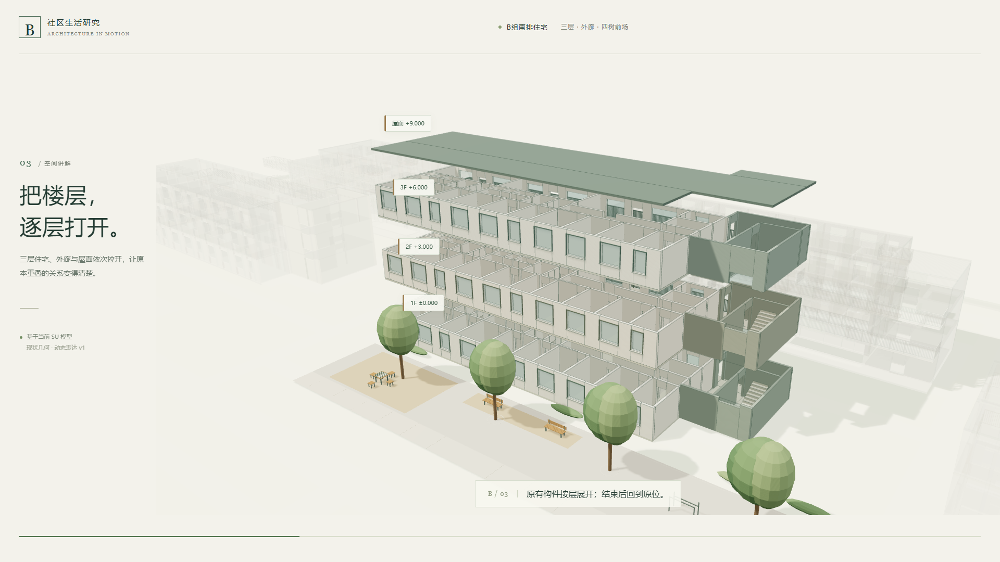

有来源的空间解析
模型事实、工作稿与示意分别说明。保留尺度、开口和构件关系，让未知项保持可见。
从真实模型出发，理解构成与空间，组织人物活动和连续镜头。用可交互、可离线的网页，让建筑的关系被看见。
默认静音 · 本地依赖 · 真实三维几何48秒，沿着同一栋建筑：从社区定位到四树前场，打开楼层，走近一户，再沿外廊与楼梯读懂空间联系。
这是本Skill的方法来源案例。保留原版视觉与叙事，公开副本校正了路径并整理了来源与许可。交通片段为压缩时间示意，非实际步速或人流计算。
r13工作模型既有导出 · 270,817个三角形
模型事实、工作稿与示意分别说明。保留尺度、开口和构件关系，让未知项保持可见。
核心v0.1.1支持按项目配置行走、上下楼、停留与坐下。人物与镜头共用同一时间轴。
模型、依赖和脚本可在本地运行。无AI旁白；视频、原生格式适配与专业计算按明确需求另行开展。